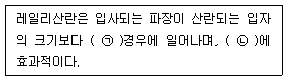
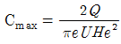
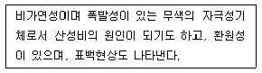
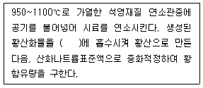
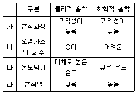
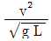
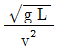
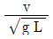
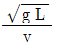

대기환경산업기사 (2016-03-06 기출문제)
1과목: 대기오염개론
1. 대기 중 광화학반응에 관한 설명으로 틀린 것은?
- NO광산화율이란 탄화수소에 의하여 NO가 NO2로 산화되는 율을 뜻한다.
- 일반적으로 대기에서의 오존농도는 NO2로 산화된 NO의 양에 비례하여 증가한다.
- 과산화기가 산소와 반응하여 오존이 생성될 수도 있다.
- 광화학반응에 영향을 미치는 빛은 파장이 짧은 적외선이다.
(정답률: 74%)

2. 지상 44m에서 풍속이 7.5m/s 일 때, 지상 11m높이에서의 풍속은? (단, Deacon식 적용, 풍속지수 p는 0.25)
- 5.3m/s
- 5.7m/s
- 6.2m/s
- 6.9m/s
(정답률: 73%)
3. 대기 중 환경감률이 –2.5℃/km인 경우의 대기상태는?
- 미단열
- 등온
- 과단열
- 역전
(정답률: 84%)
4. 레일리(Rayleigh)산란에 관한 설명으로 ( )에 알맞은 것은?

- ㉠ 큰, ㉡ 자외선
- ㉠ 큰, ㉡ 가시광선
- ㉠ 작은, ㉡ 자외선
- ㉠ 작은, ㉡ 가시광선
(정답률: 73%)
5. 오존층 보호를 위한 파괴물질의 생산 및 소비감축에 관한 내용의 국제협약으로 가장 적절한 것은?
- 바젤협약
- 리우선언
- 기후변화협약
- 몬트리올의정서
(정답률: 90%)
6. 대기오염물질에 대한 지표식물이 잘못 짝지어진 것은?
- SO2 - 자주개나리
- H2S - 사과
- 오존 - 담배
- 불소화합물 - 글라디올러스
(정답률: 77%)
7. 대기 중 오존에 관한 설명으로 틀린 것은?
- 대류권의 오존은 국지적인 광화학스모그로 생성된 옥시던트의 지표물질이다.
- 대류권의 오존은 온실가스로 작용한다.
- 청정지역 대기 중의 오존농도는 0.2~0.3ppm으로 거의 일정하다.
- 오염된 대기 중의 오존은 로스엔젤레스 스모그 사건에서 처음 확인되었다.
(정답률: 79%)
8. 냄새물질의 특성에 관한 설명으로 가장 거리가 먼 것은?
- 냄새물질은 비교적 휘발성이 낮다.
- 냄새물질은 화학반응성이 강한 편이다.
- 냄새물질은 불쾌감과 작업능률 저하를 가져온다.
- 냄새물질은 대부분 흡수, 흡착에 의해 제거가 가능하다.
(정답률: 82%)
9. 굴뚝에서 배출되는 연기 형태 중 환상형(looping)에 관한 설명으로 틀린 것은?
- 과단열감률 상태에서 발생한다.
- 상·하층 공기의 혼합이 활발하여 오염물질이 잘 확산된다.
- 굴뚝 가까운 곳에 지표농도가 높게 나타날 수 있다.
- 바람이 다소 강하고, 구름이 많이 낀 날에 주로 관찰된다.
(정답률: 74%)
10. 가솔린 자동차 운전조건 중 일산화탄소를 가장 많이 배출하는 것은?
- 감속
- 정속
- 공회전
- 급가속
(정답률: 80%)
11. Sutton의 확산 방정식에서 최대 지표농도는

이다. 현재 He가 40m일 때, 최대 지표농도를 1/4로 낮추려면 He(m)는? (단, 다른 모든 조건은 같음)- 80
- 100
- 120
- 160
(정답률: 65%)
12. 입자크기 측정법 중 현미경을 이용하는 방법으로 투영된 입자의 모양이 원형이 아닐 때, 입자의 최장 또는 최단 크기로 정의하거나 여러 방향으로 나누어 측정한 크기를 산술평균한 값으로 정의하는 직경은?
- 등가직경
- 광학직경
- Stokes직경
- 공기역학직경
(정답률: 75%)
13. 상온에서 녹황색이고, 강한 자극성 냄새를 내는 기체로서 비중이 2.49(공기=1)인 오염물질은?
- 염소
- 이산화황
- 황화수소
- 폼알데히드
(정답률: 68%)
14. 혼합기체의 부피조성이 질소(N2) 80%와 이산화탄소(CO2) 20%로 이루어졌을 때 평균분자량은?
- 31.2
- 38.9
- 44.0
- 49.3
(정답률: 68%)
15. 열섬현상에 대한 특징으로 틀린 것은?
- 도시에서 대기오염의 확산을 조사할 경우에는 도시열섬효과를 고려하여야 한다.
- 열섬현상의 원인으로는 인구집중에 따른 인공열 발생 증가, 지표면에서의 증발잠열 차이 등이 있다.
- 인구, 건물, 산업시설이 많을수록 열섬현상이 일어날 확률이 높다.
- 열섬현상이 일어나면 도심에서는 하강기류가 나타나 주변 지역과의 대류가 활발해진다.
(정답률: 85%)
16. 실내공기오염의 일반적인 지표가 되는 오염물질로서 다중이용시설에서 실내공기질 유지기준이 1,000ppm 이하인 것은?
- N2
- CO2
- CO
- H2S
(정답률: 75%)
17. 대기오염물질과 주요 배출원이 잘못 짝지어진 것은?
- 일산화탄소 - 자동차
- 이산화황 - 용광로
- 질소산화물 - 보일러
- 벤젠 - 펄프제조
(정답률: 74%)
18. 다음 설명에 해당하는 대기오염물질은?

- 이황화탄소
- 황화수소
- 이산화황
- 일산화탄소
(정답률: 67%)
19. 대기의 특성과 관련된 설명으로 틀린 것은?
- 공기는 약 0~50℃의 온도범위 내에서 보통 이상기체의 법칙을 따른다.
- 공기의 절대습도란 이론적으로 함유된 수증기 또는 물의 함량을 말하며 단위는 % 이다.
- 행성경계층(PBL)보다 높은 고도에서 기압경도력과 전향력의 평형에 의하여 이루어지는 바람을 지균풍이라고 한다.
- 대기안정도와 난류는 대기경계층(ABL)내에서 오염물질의 확산정도를 결정하는 중요한 인자이다.
(정답률: 78%)
20. 아황산가스의 재산상 피해를 설명한 것으로 가장 옳은 것은?
- 고무제품을 균열, 노화시킨다.
- Al2O3를 형성하여 부식을 가속시킨다.
- 금속구조물에서 SO2가 일정습도 이상일 때 피해가 크다.
- 비용해성인 황산염에서 용해도가 높은 탄산염으로 바뀌면서 빗물에 씻겨 건축재료를 약화시킨다.
(정답률: 63%)
2과목: 대기오염 공정시험 기준(방법)
21. 원자흡광광도법으로 대기오염물질의 농도를 정량할 때, 3종류 이상의 농도의 표준시료용액에 대하여 흡광도를 측정하여 표준물질의 농도를 가로대에, 흡광도를 세로대에 취하여 그래프를 그린 후 시료용액의 흡광도 결과를 대입하여 시료의 농도를 구하는 방법은?
- 검량선법
- 표준첨가법
- 내부표준법
- 외부표준법
(정답률: 70%)
22. 분석대상가스가 페놀인 경우 채취관 및 도관의 재질로 가장 거리가 먼 것은?
- 석영
- 실리콘수지
- 불소수지
- 스테인레스강
(정답률: 61%)
23. 표준산소농도 적용을 받는 A성분의 실측농도가 200mg/Sm3이고, 실측산소농도가 3.5%이다. 표준산소농도로 보정한 A성분의 농도는? (단, 표준산소농도는 3.⑤% 이다.)
- 195mg/Sm3
- 2⑤mg/Sm3
- 212mg/Sm3
- 221mg/Sm3
(정답률: 71%)
24. 환경대기 중의 탄화수소 농도를 측정하기 위한 시험방법 중 주 시험법에 해당하는 것은?
- 총탄화수소 측정법
- 활성 탄화수소 측정법
- 비메탄 탄화수소 측정법
- 이온성 탄화수소 측정법
(정답률: 78%)
25. 배출가스상 물질 시료채취 시 흡수병을 사용할 경우 채취관은 배출가스의 흐르는 방향에 대하여 어떻게 설치하여야 하는가?
- 45°로 연결한다.
- 60°로 연결한다.
- 90°로 연결한다.
- 120°로 연결한다.
(정답률: 77%)
26. 굴뚝단면이 원형이고 굴뚝반경이 1.1m일 때 먼지를 측정하기 위한 측정점수로 적합한 것은?
- 4
- 8
- 12
- 16
(정답률: 76%)
27. 환경대기 중 일산화탄소를 수소염 이온화 검출기법으로 측정하고자 할 때, 그 원리로 옳은 것은?
- 시료를 산화시켜 탄산가스로하고, 이를 적외선 분석법에 의해 측정한다.
- 시료를 수소 불꽃 중에서 연소시켜 수산화칼륨-에탄올 용액이 함유된 정제칼럼을 통과한 후 그 농도를 측정한다.
- 시료를 수소불꽃 중에서 연소시키면 탄화수소가 발생하며, 이를 백금촉매를 첨가한 활성탄칼럼을 통과하여 생성된 일산화탄소를 FID법으로 측정한다.
- 시료를 운반가스인 수소와 함께 니켈 촉매가 채워진 분리관을 통과시키면 메탄이 생성되며 이를 FID법으로 측정한다.
(정답률: 61%)
28. 굴뚝의 150℃인 배출가스를 피토우관으로 측정한 결과 동압이 20mmH2O였을 때 유속은? (단, 습한 배출가스 빌도는 1.3kg/Sm3, 피토우관 계수는 0.8790이다.)
- 1.48 m/sec
- 17.4 m/sec
- 19.0 m/sec
- 21.6 m/sec
(정답률: 62%)
29. 흡광광도 분석장치 중 광원부에서 자외부의 광원으로 주로 사용되는 것은?
- 중공음극램프
- 텅스텐램프
- 광전자증배관
- 중수소방전관
(정답률: 61%)
30. 배출가스 중의 중금속류를 분석할 때 시료 채취시 사용한 여과지의 전처리로서 저온 회화법을 이용한다. 저온 회화법의 회화온도 기준으로 적절한 것은?
- 100℃ 이하
- 150℃ 이하
- 200℃ 이하
- 250℃ 이하
(정답률: 63%)
31. 배출가스 중의 황화수소 분석 방법 중 요오드적정법에서 종말점의 색은?
- 무색
- 적색
- 녹색
- 청색
(정답률: 68%)
32. 비분산 적외선 분석계의 장치구성에 관한 설명으로 옳지 않은 것은?
- 광원은 원칙적으로 니크롬선 또는 탄화규소의 저항체에 전류를 흘려 가열한 것을 사용한다.
- 비교셀은 시료셀과 동일한 모양을 갖으며 수소 또는 헬륨 기체를 봉입하여 사용한다.
- 검출기는 광속을 받아들여 시료가스 중 측정성분 농도에 대응하는 신호를 발생시키는 선택적 검출기 혹은 광학필터와 비선택적검출기를 조합하여 사용한다.
- 광학필터는 시료가스 중에 포함되어 있는 간섭성분가스의 흡수파장역의 적외선을 흡수제거하기 위하여 사용한다.
(정답률: 68%)
33. 시험의 기재 및 용어에 대한 설명 중 옳지 않은 것은?
- 시험조작 중 “즉시”란 10초 이내 표시된 조작을 하는 것을 뜻한다.
- “감압 또는 진공”이라 함은 따로 규정이 없는 한 15mmHg 이하를 뜻한다.
- 액체성분의 양을 “정확히 취한다”함은 홀피펫, 메스플라스크 또는 이와 동등이상이 정확도를 갖는 용량계를 사용하여 조작하는 것을 뜻한다.
- “정확히 단다”라 함은 규정한 양의 검체를 취하여 분석용 저울로 0.1mg까지 다는 것을 뜻한다.
(정답률: 80%)
34. 환경대기 중의 시료채취방법 중 고용량공기포집기(High Volume Air Sampler)의 포집용 여과지에 관한 설명으로 가장 거리가 먼 것은?
- 흡수성이 적고, 가스상 물질의 흡착도 적은 것이어야 한다.
- 입자상 물질의 포집에 사용하는 여과지는 0.5㎛되는 입자를 95% 이상 포집할 수 있어야 한다.
- 분석에 방해되는 물질을 함유하지 않은 것이어야 한다.
- 사용되는 여과지의 재질은 일반적으로 유리섬유, 석영섬유, 폴리스틸렌, 불소수지 등이다.
(정답률: 69%)
35. 이온크로마토그래프법에서 장치구성에 관한 설명으로 가장 거리가 먼 것은?
- 송액펌프는 맥동(脈動)이 적은 것, 필요한 압력을 얻을 수 있는 것, 유량조절이 가능한 것, 용리액 교환이 가능한 것을 사용한다.
- 용리액조는 이온성분이 용출되지 않는 재질로써 용리액을 직접공기와 접촉시키지 않는 밀폐된 것을 선택하며, 일반적으로 폴리에틸렌이나 경질 유리제를 사용한다.
- 써프렛서는 관형과 이온교환막형이 있으며, 관형은 음이온에는 스티롤계 강산형(H+)수지가, 양이온에는 스티롤계 강염기형(OH-)의 수지가 충진된 것을 사용한다.
- 자외선흡수검출기(UV 검출기)는 전이금속성분의 발색반응을 이용하는 경우에 주로 사용되며, 염전도도 검출기와 병행하여 사용하기도 한다.
(정답률: 52%)
36. 질소산화물을 페놀디술폰산법으로 분석할 때 사용하는 흡수액으로 옳은 것은?
- 황산+과산화수소+증류수
- 질산암모늄+황산(1→5)
- 크로모트로핀산+황산
- 아세틸아세톤함유흡수액
(정답률: 82%)
37. 연료용 유류 중의 황함유량을 측정하기 위한 분석방법 중 연소관식 공기법에 관한 설명으로 ( )에 알맞은 것은?

- 과산화수소(3%)
- 질산암모늄용액
- 아연아민착염용액
- 크로모트로핀산용액
(정답률: 72%)
38. 소각시설에서 배출되는 입자상 및 가스상 수은을 디티존 법으로 분석할 때의 측정파장은?
- 287nm
- 325nm
- 358nm
- 490nm
(정답률: 53%)
39. 배출가스 중의 먼지 측정에 사용되는 흡인노즐에 관한 설명 중 잘못된 것은?
- 흡인노즐 내경은 4mm이상이어야 한다.
- 흡인노즐은 경질유리제 재질로도 측정할 수 있다.
- 흡인노즐의 꼭지점은 30℃ 이하의 예각으로 매끈한 반구 모양으로 한다.
- 흡인노즐의 선택은 오리피스 압차(△H)를 결정하나 등속흡인과는 무관하다.
(정답률: 57%)
40. 굴뚝 배출가스 중의 유량, 유속 측정방법에 사용되는 피토우관에 관한 설명으로 옳지 않은 것은?
- 스텐레스와 같은 재질의 금속관이 사용된다.
- 피토우관의 각 분기관 사이의 거리는 같아야 한다.
- 관의 바깥지름의 범위는 50~100mm 정도이어야 한다.
- 각 분기관과 오리피스 평면과의 거리는 바깥지름의 1.⑤~1.50배 사이에 있어야 한다.
(정답률: 63%)
3과목: 대기오염방지기술
41. 보일러의 배출가스 조성이 CO2=12%, O28%, N2=80%일 때 공기비는?
- 1.6
- 1.8
- 2.0
- 3.4
(정답률: 57%)
42. 여과포(bag filter)의 기능에 대한 설명으로 틀린 것은?
- 겉보기 여과속도가 작을수록 미세입자의 포집이 가능하다.
- 간헐식 털어내기 방식은 비교적 낮은 집진율을 얻는 경우에 적합하다.
- 연속식 털어내기 방식은 고농도의 함진가스 처리에 적합하다.
- 필요에 따라 유리섬유의 실리콘처리, 합성섬유의 열처리 등을 한다.
(정답률: 64%)
43. 기상농도와 액상농도의 평형관계를 나타내는 헨리법칙이 적용되지 않는 기체는?
- O2
- N2
- CO2
- NH3
(정답률: 71%)
44. 천연가스에 대한 설명으로 틀린 것은?
- 주성분은 프로판이다.
- 도시가스용으로 많이 사용한다.
- 냉각하여 액화시킨 것을 LNG라 한다.
- 압축하여 자동차의 연료로도 사용한다.
(정답률: 73%)
45. 석탄 연소 후 배출가스 성분분석 결과 CO2=15%, O2=5%, N2=80% 일 때 CO2max(%)는?
- 약 15%
- 약 20%
- 약 25%
- 약 30%
(정답률: 52%)
46. 다이옥신 처리대책이 아닌 것은?
- 촉매분해법
- 오존산화법
- 생물학적 분해법
- 선택적 접촉환원법
(정답률: 53%)
47. 충전탑에 관한 설명으로 틀린 것은?
- 액가스비는 0.⑤~0.1L/m3 정도이며, 포종탑류에 비해 압력손실이 크다.
- 흡수액에 고형성분이 함유되면 침전물이 생겨 성능이 저하될 수 있다.
- 급수량이 적절하면 효과가 좋다.
- 처리가스 유량의 변화에도 비교적 적응성이 있다.
(정답률: 73%)
48. 물리적 흡착과 화학적 흡착의 일반적인 특성을 상대 비교한 내용으로 틀린 것은?

- 가
- 나
- 다
- 라
(정답률: 73%)
49. 프라우드 수(Froude number)에 해당하는 것은? (단, g는 중력가속도, v는 속도, L은 길이)




(정답률: 55%)
50. 황화수소(H2S) 1.0Sm3를 완전 연소할 때 소요되는 이론 연소공기량은?
- 약 2.4 Sm3
- 약 7.1 Sm3
- 약 9.6 Sm3
- 약 12.3 Sm3
(정답률: 55%)
51. 충전탑에서 충전물의 구비조건에 관한 설명으로 틀린 것은?
- 단위용적에 대한 표면적이 커야 한다.
- 내열성과 내식성이 커야 한다.
- 압력손실과 충전밀도가 적어야 한다.
- 액가스 분포를 균일하게 유지할 수 있어야 한다.
(정답률: 57%)
52. 여과포(bag filter)에 사용되는 여재 중 고온에 가장 잘 견디는 것은?
- 오울론
- 비닐론
- 글라스화이버
- 폴리아미드계 나일론
(정답률: 81%)
53. 벤츄리스크러버의 액가스비 범위로 가장 적합한 것은?
- 0.⑤~0.1L/m3
- 0.3~1.5L/m3
- 3~10L/m3
- 10~50L/m3
(정답률: 73%)
54. 황 2kg을 공기 중에서 이론적으로 완전연소 시킬 때 발생되는 열량은? (단, 황은 모두 SO2로 전환되며, 열량은 80,000kcal/mol)
- 1,250kcal
- 2,500kcal
- 5,000kcal
- 80,000kcal
(정답률: 54%)
55. 세정집진장치의 입자 포집원리에 관한 설명으로 틀린 것은?
- 액적에 입자가 충돌하여 부착한다.
- 배기 증습에 의해 입자가 서로 응집한다.
- 미립자의 확산에 의하여 액적과의 접촉을 쉽게 한다.
- 입자를 핵으로 한 증기의 응결에 따라 응집성을 감소시킨다.
(정답률: 62%)
56. 직경 0.3m인 덕트로 공기가 1m/sec로 흐를 때 이 공기의 레이놀즈 수(NRe)는?(공기밀도 1.3kg/m3, 점도 1.8x10-4/m•s)
- 약 1,083
- 약 2,167
- 약 3,251
- 약 4,334
(정답률: 67%)
57. 다음 악취 중 공기 중에서 최소감지농도가 가장 큰 것은?
- 아세톤
- 식초
- 포름알데히드
- 페놀
(정답률: 69%)
58. 기체연료에 관한 설명으로 거리가 먼 것은?
- 고로가스는 용광로에서 선철을 제조할 때 발생한다.
- 오일가스는 석탄의 건류 및 가스화에 의하여 발생된 가스로서 주요 가연성분은 메탄 및 프로판이다.
- 발생로가스는 가열된 석탄 또는 코크스에 공기와 수증기를 연속적으로 공급하여 부분적으로 산화반응시킴으로써 얻어진다.
- 전로가스는 선철을 제강과정에서 강철로 만드는 과정에서 발생하는 가스로서 주성분은 일산화탄소이다.
(정답률: 54%)
59. 하부의 더스트 박스(dust box)에서 처리가스량의 5~10%를 처리하여 싸이클론 내 난류현상을 억제시켜 먼지의 재비산을 막아주고 장치 내벽에 먼지가 부착되는 것을 방지하는 효과는?
- 에디(eddy)
- 브라인딩(blinding)
- 분진 폐색(dust plugging)
- 블로우 다운(blow down)
(정답률: 79%)
60. 지름 40㎛입자의 최종 침전속도가 15cm/sec라고 할 때 중력침전실의 높이가 1.25m 이면 입자를 완전히 제거하기 위해 소요되는 이론적인 중력침전실의 길이는? (단, 가스의 유속은 1.8m/sec이다.)
- 12m
- 15m
- 18m
- 20m
(정답률: 48%)
4과목: 대기환경 관계 법규
61. 미세먼지(PM-10)의 24시간 평균치 기준(환경기준)은?
- 50㎍/m3이하
- 75㎍/m3이하
- 100㎍/m3이하
- 150㎍/m3이하
(정답률: 55%)
62. 대기환경보전법규상 측정기기의 부착 · 운영 등과 관련된 행정처분기준 중 교정가스 또는 교정액의 표준값을 거짓으로 입력하거나 부적절한 교정가스 또는 교정액을 사용하는 경우의 각 위반차수(1차-4차)별 행정처분기준으로 옳은 것은?
- 개선명령 – 경고 – 조업정지 5일 – 조업정지 10일
- 경고 – 경고 – 조업정지 5일 – 조업정지 10일
- 경고 – 조업정지 10일 – 조업정지 30일 - 허가취소
- 조업정지 5일 – 조업정지 10 – 경고 – 허가취소
(정답률: 57%)
63. 대기환경보전법 시행규칙에 규정된 자동차 연료용 첨가제가 아닌 것은?
- 매연억제제
- 청정분산제
- 유동성향상제
- 윤활성세척제
(정답률: 56%)
64. 대기환경보전법규상 대기환경규제지역으로 지정된 경우, 당해 지역의 시·도지사가 당해지역의 환경기준을 달성·유지하기 위한 실천계획 수립 시 포함하여야 할 사항으로 가장 거리가 먼 것은?
- 일반 환경 현황
- 대기오염 저감효과를 측정하기 위한 연도별 측정망 확충계획
- 배출량 조사결과 및 대기오염예측모형을 이용하여 예측한 대기오염도
- 대기보전을 위한 투자계획과 대기오염물질 저감효과를 고려한 경제성 평가
(정답률: 44%)
65. 대기환경보전법규상 위임업무 보고사항 중 “환경오염사고 발생 및 조치사항”의 보고횟수 기준은?
- 연 1회
- 연 2회
- 연 4회
- 수 시
(정답률: 72%)
66. 사업자가 환경기술인의 임명신고를 할 때 신고기간은?
- 최초로 배출시설을 설치한 경우에는 설치신고를 할 때
- 최초로 배출시설을 설치한 경우에는 가동개시신고를 할 때
- 환경기술인을 바꾸어 임명할 경우에는 그 사유가 발생한 날부터 7일 이내
- 환경기술인을 바꾸어 임명할 경우에는 그 사유가 발생한 날부터 15일 이내
(정답률: 71%)
67. 대기환경보전법규상 환경기술인의 보수교육은 신규교육을 받은 날을 기준으로 몇 년마다 받아야 하는가? (단, 정보통신매체를 이용하여 원격교육을 하는 경우 제외)
- 1년마다 1회
- 2년마다 1회
- 3년마다 1회
- 5년마다 1회
(정답률: 76%)
68. 다음 중 인증을 생략할 수 있는 자동차로 가장 적절한 것은?
- 군용 및 경호업무용 등 국가의 특수한 공용의 목적으로 사용하기 위한 자동차와 소방용 자동차
- 외교관 또는 주한 외국군인의 가족이 사용하기 위하여 반입하는 자동차
- 여행자 등이 다시 반출할 것을 조건으로 일시 반입하는 자동차
- 주한 외국군대의 구성원이 공용의 목적으로 사용하기 위한 자동차
(정답률: 51%)
69. 대기오염물질 배출시설의 변경신고 사항이 되는 것은?
- 배출시설 또는 방지시설을 임대하는 경우
- 신규로 특정대기유해 물질이 발생되는 배출시설
- 설치·허가를 받은 배출시설 규모의 합계 또는 누계보다 100분의 60이상 증설하는 경우
- 설치허가를 받은 특정대기 유해물질 배출시설규모의 합계 또는 누계보다 100분의 40이상 증설하는 경우
(정답률: 53%)
70. 대기환경보전법규상 자가측정대상 배출구별 규모에 따른 측정횟수기준으로 옳은 것은? (단, 관제센터로 측정결과를 자동전송하지 않는 사업장의 배출구 기준)
- 먼지·황산화물 및 질소산화물의 연간 발생량 합계가 20톤 이상 80톤 미만인 시설 – 월 1회 이상
- 먼지·황산화물 및 질소산화물의 연간 발생량 합계가 20톤 이상 80톤 미만인 시설 – 월 2회 이상
- 먼지·황산화물 및 질소산화물의 연간 발생량 합계가 10톤 이상 20톤 미만인 시설 – 월 1회 이상
- 먼지·황산화물 및 질소산화물의 연간 발생량 합계가 10톤 이상 20톤 미만인 시설 – 월 2회 이상
(정답률: 67%)
71. 대기오염경보에 관한 내용 중 옳지 않은 것은?
- 자동차의 운행제한이나 사업장의 조업단축등을 명령받은 자는 정당한 사유가 없으면 따라야 한다.
- 대기오염경보의 발령 사유가 없어진 경우 시·도지사는 경보를 즉시 해제하여야 한다.
- 환경부장관은 경보발령지역의 대기오염을 긴급히 줄이기 위해 자동차 운행제한, 사업장 조업단축을 명할 수 있다.
- 대기오염경보의 대상지역, 대상오염물질, 발령기준, 경보단계 및 경보 3단계별 조치에 필요한 사항은 대통령령으로 정한다.
(정답률: 52%)
72. 대기환경보전법규상 자동차 운행정지표지에 관한 사항으로 옳지 않은 것은?
- 자동차의 전면유리 좌측상단에 붙인다.
- 바탕색은 노란색으로, 문자는 검정색으로 한다.
- 운행정지표지에는 자동차 등록번호, 점검당시 누적주행거리(km), 운행정지기간, 운행정지기간 중 주차장소 등이 기재된다.
- 운행정지대상 자동차를 운행정지기간 내에 운행하는 경우에는 대기환경보전법상 300만원 이하의 벌금을 물게 된다.
(정답률: 80%)
73. 특정대기유해물질이 아닌 것은?
- 에틸벤젠
- 벤젠
- 아세트알데히드
- 아크롤레인
(정답률: 54%)
74. 대기오염 경보의 대상지역은 누가 필요하다고 인정하여 지정하는가?
- 대통령
- 환경부장관
- 군수, 구청장
- 특별시장, 광역시장, 도지사
(정답률: 74%)
75. 시, 도지사는 사업장에서 발생되는 악취가 규정에 의한 배출허용기준 초과 시 사업자에게 개선명령을 할 때, 악취의 제거 또는 어제 등의 조치에 걸리는 기간을 고려하여 얼마의 범위 안에서 조치기간을 정할 수 있는가?(단, 연장기간 제외)
- 6개월
- 1년
- 1년 6개월
- 2년
(정답률: 53%)
76. 대기의 오염도검사를 할 수 있는 기관과 거리가 먼 것은?
- 유역환경청
- 환경보전협회
- 한국환경공단
- 특별시·광역시·도의 보건환경연구원
(정답률: 79%)
77. 오염물질의 초과부과금 산정시 오염물질 1킬로그램 당 부과금액이 가장 큰 것은?
- 염화수소
- 황화수소
- 시안화수소
- 불소화합물
(정답률: 48%)
78. 대기환경보전법규상 배출시설을 설치·운영하는 사업자에 대하여 조업정지를 명하여야 하는 경우로서 그 조업정지가 주민의 생활 등 그 밖에 공익에 현저한 지장을 줄 우려가 있다고 인정되는 경우 조업정지처분에 갈음하여 과징금을 부과할 수 있다. 이 때 과징금의 부과기준에 적용되지 않는 것은?
- 조업정지일수
- 1일당 부과금액
- 오염물질별 부과금액
- 사업장 규모별 부과계수
(정답률: 66%)
79. 대기환경보전법상 용어의 정의로 옳지 않은 것은?
- “온실가스”란 적외선 복사열을 흡수하거나 다시 방출하여 온실효과를 유발하는 대기 중의 가스상태 물질로서 이산화탄소, 메탄, 아산화질소, 수소불화탄소, 과불화탄소, 육불화황을 말한다.
- “저공해엔진”이란 자동차에서 배출되는 대기오염물질을 줄이기 위한 엔진(엔진개조에 사용하는 부품을 포함한다)으로서 환경부령으로 정하는 배출허용기준에 맞는 엔진을 말한다.
- “촉매제”란 배출가스를 줄이는 효과를 높이기 위하여 배출가스저감장치에 사용되는 화학물질로서 환경부령으로 정하는 것을 말한다.
- “검댕”이란 연소할 때에 생기는 유리탄소가 응결하여 입자의 지름이 10미크론 이상이 되는 입자상물질을 말한다.
(정답률: 66%)
80. 대기환경보전법규상 사업자는 자가측정에 관한 기록을 일정기간동안 보존해야 하는데, 측정시 사용한 여과지 및 시료채취 기록지의 보존기간기준으로 옳은 것은? (단, 환경분야 시험·검사 등에 관한 법률에 의한 환경오염공정시험기준에 따른다)
- 측정한 날부터 3개월로 한다.
- 측정한 날부터 6개월로 한다.
- 측정한 날부터 1년으로 한다.
- 측정한 날부터 3년으로 한다.
(정답률: 59%)